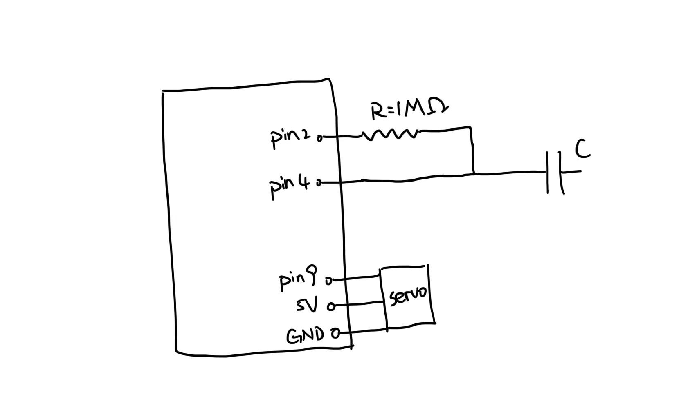
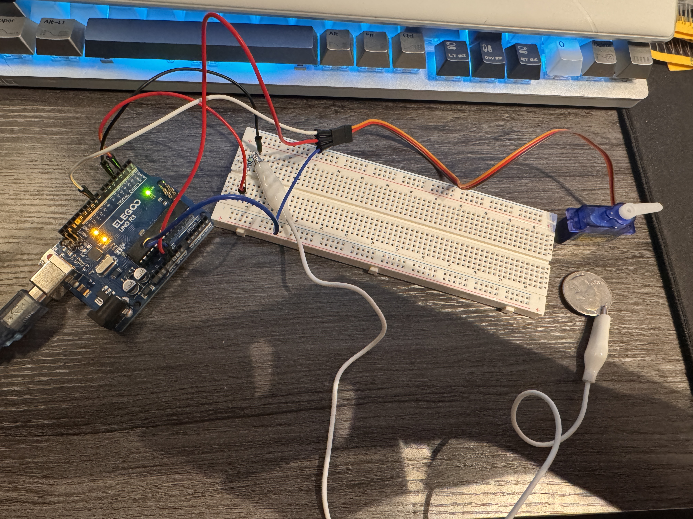
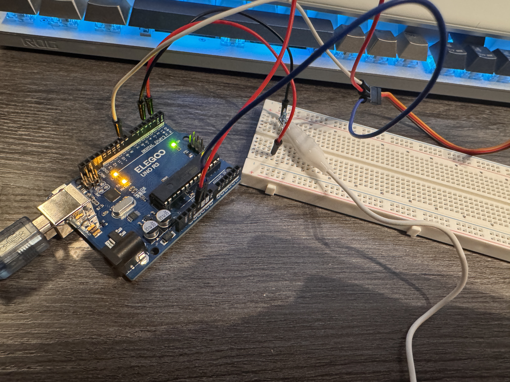

For this assignment, I built an "automatic" door using a capacitive touch sensor (a coin) and a servo motor. When I touch the metal sensor, the servo rotates from 0 degrees to 90 degrees. It stays open for 3 seconds and then automatically returns to its original position.

This schematic is what I build later, the connections between the Arduino Uno, capacitive touch sensor, and servo motor. I used a 1 megaohm resistor between pins 2 and 4 for the capacitive touch sensor.
I chose a 1M ohm resistor because it provides enough sensitivity to detect direct touch. The servo motor receives its control signal from pin ~9 and is connected to 5V power and ground.

This is my completed circuit using an Arduino Uno, breadboard, resistor, metal touch sensor(a coin), and servo motor. The capacitive touch sensor is the input, and the servo motor is the output.

This photo shows another view of my circuit with the detailed lining showing in the image. I connected the components based on my schematic and tested the touch sensor and servo motor separately before combining them.
The video shows how my automatic door works. When I touch the metal sensor(coin), the servo moves to 90 degrees to open the door. And on the serial reader it will print door open. After waiting for 3 seconds, the servo automatically returns to 0 degrees and the serial reader will print door closed. I don't need to touch the sensor again to close the door.
I used two Arduino libraries: CapacitiveSensor.h and Servo.h. The CapacitiveSensor library reads the touch sensor, and the Servo library controls the servo motor.
I set the touch threshold to 1000 because my sensor readings were very low when untouched and much higher when touched.
// Include the capacitive touch library
#include <CapacitiveSensor.h>
// Include the servo motor library
#include <Servo.h>
// Set pin 2 as send and pin 4 as receive
CapacitiveSensor touch = CapacitiveSensor(2, 4);
// Create the servo object
Servo myservo;
// Set the touch threshold
long threshold = 1000;
// Remember whether the sensor was touched
bool wasTouched = false;
// Run once when Arduino starts
void setup() {
// Start Serial Monitor
Serial.begin(9600);
// Connect the servo to pin 9
myservo.attach(9);
// Start with the door closed
myservo.write(0);
}
// Repeat continuously
void loop() {
// Read the capacitive touch sensor
long value = touch.capacitiveSensor(30);
// Print the sensor reading
Serial.println(value);
// Check whether the sensor is touched
bool isTouched = value > threshold;
// Check for a new touch
if (isTouched && !wasTouched) {
// Move the servo to 90 degrees
myservo.write(90);
// Print door status
Serial.println("Door Open");
// Keep the door open for 3 seconds
delay(3000);
// Move the servo back to 0 degrees
myservo.write(0);
// Print door status
Serial.println("Door Closed");
}
// Save the current touch state
wasTouched = isTouched;
// Wait 50 milliseconds before reading again
delay(50);
}

This graph shows the voltage at pin 9 over time. The voltage switches between 0V and approximately 5V. The servo receives a pulse about every 20 milliseconds. As the servo moves from 0 to 180 degrees, the HIGH pulse becomes longer, increasing from about 1 ms to 2 ms.
I can read the sensor three times and only accept a touch if at least two readings agree. Since the sensor gives an incorrect reading only 1% of the time, this reduces the chance that one bad reading will accidentally open the door.
int touchCount = 0;
// Read the sensor 3 times
for (int i = 0; i < 3; i++) {
// Check if the sensor detects touch
if (touch.capacitiveSensor(30) > 1000) {
touchCount++;
}
}
// Accept touch if at least 2 readings agree
if (touchCount >= 2) {
// Open the door
myservo.write(90);
}
I can use averaging to reduce random noise. By taking multiple sensor readings and calculating the average, the sensor value ideally will be more stable.
long total = 0;
// Read the sensor 10 times
for (int i = 0; i < 10; i++) {
// Add each reading to the total
total += touch.capacitiveSensor(30);
}
// Calculate the average
long average = total / 10;
// Check if the average detects touch
if (average > 1000) {
// Open the door
myservo.write(90);
}
I can take 10 sensor readings and calculate their average. Since the readings randomly vary by ±10%, averaging helps reduce the noise and gives a value closer to the true measurement. Like in my example, using the average value will make my automatic door respond more consistently.
I used ChatGPT to check three sections of my Arduino code and make sure they worked correctly. I also used it to help understand the code. The conversation are shared in the following link: https://chatgpt.com/share/6aecdb09-9828-83e8-9ff8-404717197c33